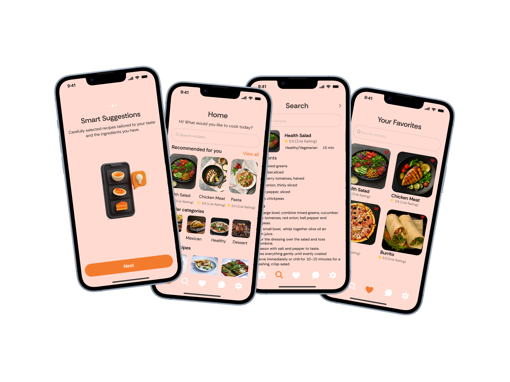

A user-friendly cooking app that offers personalized recipe recommendations, step-by-step cooking instructions, and meal planning features to enhance your culinary experience.

Project Overview
Smart Recipe is a mobile app concept designed to simplify daily meal decisions. It helps users quickly discover recipes, organize favorites, and plan meals based on personal preferences, available time, and ingredients at home.
The Problem
Many recipe apps contain too much content without clear structure, making it difficult for users to decide what to cook. People often abandon the process because searching, filtering, and comparing recipes takes too long, especially during busy weekdays.
Goals
The objective was to design a calm and efficient cooking experience that reduces decision fatigue. Core goals included:
faster recipe discovery, intuitive filtering, clear step-by-step guidance, and a visual system that makes content easy to scan and trust.
Process
The UX process started with analyzing common pain points in cooking apps and mapping high-priority user journeys. Wireframes were used to validate navigation and information hierarchy, followed by high-fidelity design focused on readability, image-first cards, and reusable UI components for scale.
Solution
Smart Recipe provides personalized recommendations, category-based browsing, and quick filters for preparation time, difficulty, and dietary needs. Each recipe screen is structured around clear ingredient lists, step-by-step instructions, and save actions that support repeat usage and weekly planning.
Outcome
The final concept delivers a polished and user-friendly product that makes everyday cooking faster and more enjoyable. By combining clarity, personalization, and clean interaction patterns, Smart Recipe supports stronger engagement and long-term user retention.